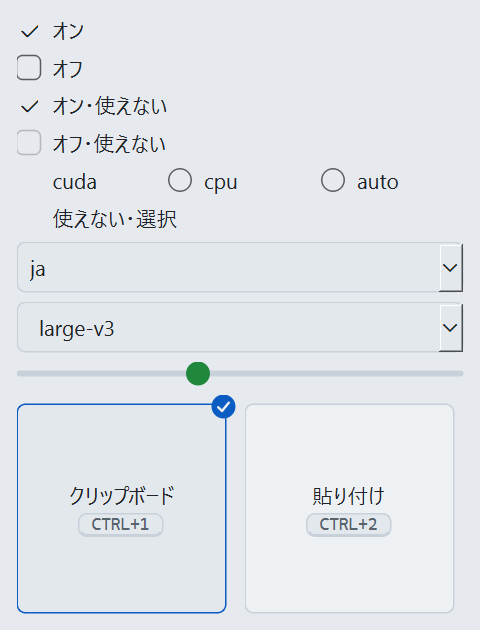
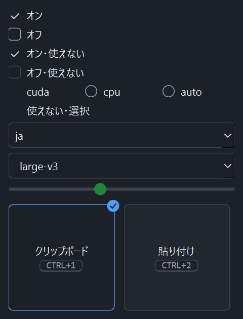

チェックボックス・ラジオボタンの印
設定画面のチェックボックス・ラジオボタンの印と、選択欄の開く印。案 A はオンの印を accent_fg、案 B は primary で塗る。どちらもオンはチェック・点の形でもオフと分かる。
今の描画（Qt の実画面）


- 選んだラジオボタン（cuda・使えない状態の選択）: 印が丸ごと消え、どれを選んだか分からない（Issue #155 の添付の例）
- オンのチェックボックス: 箱が消えてチェックだけになり、オフの箱と形がそろわない
- 選択欄の開く印: 角の丸い欄の右端に四角い枠が重なり、ダークでは黒い縁が出る
- 波形の感度のつまみ・文字起こし中の表示の選んだボタンの印: 明暗とも見分けられるため変えない
チェックボックス
| 状態 | 案 A・ライト | 案 A・ダーク | 案 B・ライト | 案 B・ダーク |
|---|---|---|---|---|
| オフ | ||||
| オン | ||||
| オフ・使えない | ||||
| オン・使えない | ||||
| オフ・フォーカス | ||||
| オン・フォーカス | ||||
| 長い名前（オン） |
フォーカスは印と名前の組を accent_fg の枠で囲む。かざすとオフの箱の線が accent_fg になる。
ラジオボタン
| 状態 | 案 A・ライト | 案 A・ダーク | 案 B・ライト | 案 B・ダーク |
|---|---|---|---|---|
| 選んでいない | ||||
| 選んだ | ||||
| 選んでいない・使えない | ||||
| 選んだ・使えない | ||||
| 選んでいない・フォーカス | ||||
| 選んだ・フォーカス |
ラジオの選択肢の間（案 A の色）
| 間 | ライト | ダーク |
|---|---|---|
| 今（6px 前後） | ||
| 20px（推奨） |
今は「cuda ○ cpu」の丸が前後どちらの名前の印か読み取りにくい。印と名前の間（8px）より選択肢の間を広くする。
選択欄の開く印
| 状態 | ライト | ダーク |
|---|---|---|
| 直した印 |
別の枠を持たせず、欄の右端に text_muted の V 字を置く。案 A・B で変わらない。